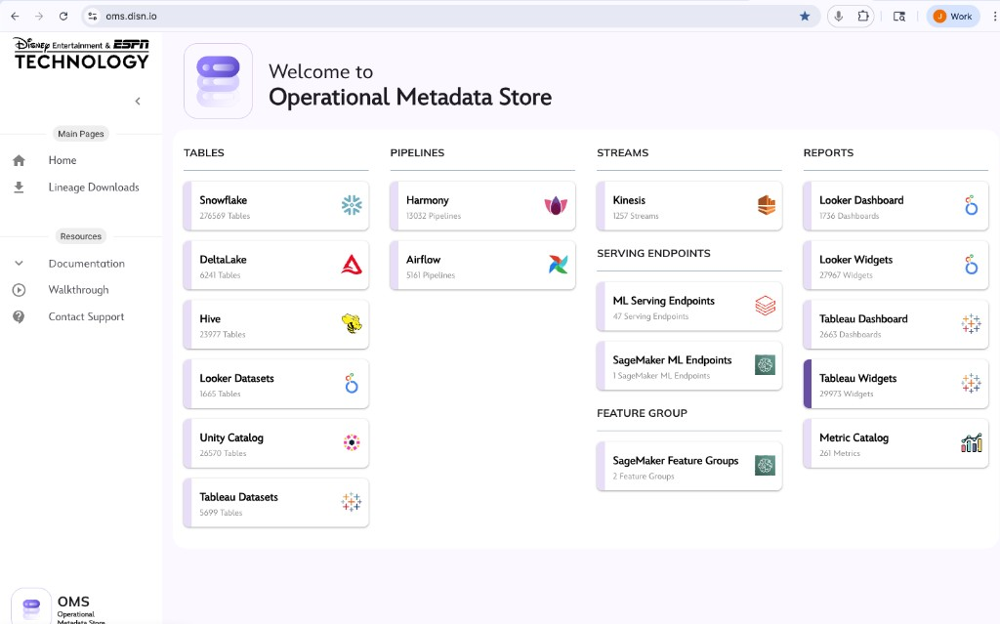
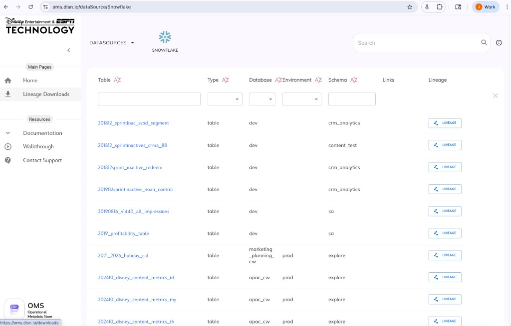
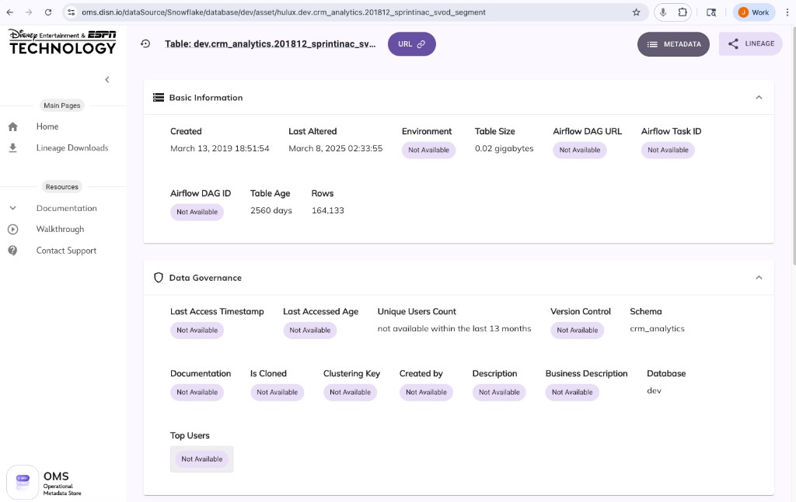

Disney Streaming Services is transitioning from Alation (external data catalog) to OMS (Operational Metadata Store, internal Disney service). OMS currently focuses on technical metadata; this project will extend OMS to absorb business metadata and data catalog capabilities previously provided by Alation.
Critical Timeline: ~6.5 months remain until Alation contract end (Oct 1, 2026).
The following screenshots from OMS (oms.disn.io) document the current state as of March 2026. This evidence informs the gap analysis in Section 2.

Figure 1. OMS home/dashboard: inventory summary of tables, pipelines, streams, serving endpoints, feature groups, and reporting objects (oms.disn.io).
Current OMS inventory (validate with source teams):
| Category | Source | Count |
|---|---|---|
| Tables | Snowflake | 275,659 |
| DeltaLake | 6,241 | |
| Hive | 23,977 | |
| Looker Datasets | 1,665 | |
| Unity Catalog | 26,570 | |
| Tableau Datasets | 5,699 | |
| Pipelines | Harmony | 13,032 |
| Airflow | 561 | |
| Streams | Kinesis | 1,257 |
| Serving Endpoints | ML / SageMaker | 47 + 1 |
| Feature Groups | SageMaker | 2 |
| Reports | Looker Dashboard / Widgets | 1,756 / 27,967 |
| Tableau Dashboard / Widgets | 2,663 / 29,973 | |
| Metric Catalog | 261 |

Figure 2. OMS Snowflake datasource UI (oms.disn.io/dataSource/Snowflake): table list with filtering and per-row Lineage action.
What OMS currently shows: Table (clickable link), Type, Database, Environment, Schema, Links, Lineage button. Filter controls under each column header; global search box. Gaps vs. Alation: No business glossary terms, ownership, description, or tags visible in the list view.

Figure 3. OMS table detail UI for dev.crm_analytics.201812_sprintinac_svod_segment — many business/governance fields show "Not Available."
Field population status (example table):
| Field | Status |
|---|---|
| Created, Last Altered, Rows, Table Size, Table Age, Schema, Database | Populated (technical metadata) |
| Environment, Airflow DAG URL, Airflow Task ID, Airflow DAG ID | Not Available |
| Last Access Timestamp, Last Accessed Age, Unique Users Count | Not Available (or "not available within the last 13 months") |
| Version Control, Documentation, Created by, Description, Business Description | Not Available |
| Top Users, Is Cloned, Clustering Key | Not Available |
Gap pattern: Technical metadata (rows, size, schema, created/last altered) is present; business/governance metadata and usage/lineage/Airflow links are largely missing. OMS has UI placeholders for these fields — they need to be populated via integrations and stewardship.
Priority items for Alation parity: Documentation/Business Description, access/usage metrics, lineage/Airflow integration, owners/created-by, version control, top users.
| Principle | Rationale |
|---|---|
| Metadata-first | Business metadata (glossary, descriptions, tags, lineage context) drives adoption. Technical metadata can be re-ingested; business context cannot. Preserving 95%+ of business metadata is a leading indicator of success. |
| Phased rollout | Phased rollouts reduce incidents by ~60% vs. big-bang cutover. Run Alation and OMS in parallel during transition. |
| Governance-led | Data governance team owns requirements, acceptance criteria, and adoption. Engineering owns build; governance owns "what" and "why." |
| Risk-based prioritization | Not all Alation features are equal. Prioritize by user impact, compliance needs, and migration complexity. |
Based on OMS screenshots (Section above) and Alation product capabilities:
| Capability | Description | OMS Gap Assessment (Evidence) |
|---|---|---|
| Search & Discovery | Keyword + semantic search across tables, schemas, columns, articles, glossary terms | OMS has technical search (column filters, global search in datasource view). Gap: No business-context search; no glossary/article search. |
| Business Glossary | Terms, definitions, synonyms, stewardship | Gap: No glossary visible in OMS UI. Table list shows no glossary terms. |
| Documentation / Business Description | Descriptions linked to catalog objects | Gap: Table detail page shows "Documentation" and "Business Description" as "Not Available." UI placeholders exist; need population. |
| Data Lineage | Upstream/downstream lineage (table, column, dataflow level) | OMS has Lineage button per row; Lineage Downloads in nav. Gap: Assess lineage depth; Airflow DAG/Task links show "Not Available" for this table. |
| Tags & Custom Fields | Classification, PII flags, domain ownership | Gap: No tags visible in table list or detail view. Document custom fields in Alation; map to OMS schema. |
| Data Sources & Connectors | 120+ connectors; datasource metadata | OMS has Snowflake, DeltaLake, Hive, Unity, Looker, Tableau, Harmony, Airflow, Kinesis, SageMaker. Gap: Different scope; document which sources matter for DSS. |
| Usage / Access Metrics | Last access, unique users, top users | Gap: "Last Access Timestamp," "Unique Users Count," "Top Users" show "Not Available" (or "not available within the last 13 months"). |
| Ownership / Created By | Steward, owner, created-by | Gap: "Created by" shows "Not Available." No ownership visible in UI. |
| Version Control | Asset versioning | Gap: "Version Control" shows "Not Available." |
| Airflow Integration | DAG ID, DAG URL, Task ID | OMS has UI fields for Airflow. Gap: All show "Not Available" for this table; integration may be absent or incomplete. |
| Policy Center | Policies, risk, compliance | Document governance policies in Alation; assess OMS governance model. |
| API & Integrations | REST APIs for bulk ops, custom metadata | OMS API coverage; integration gaps for metadata population. |
| Area | Typical Promise | Typical Gap |
|---|---|---|
| Semantic / AI search | Natural language search | Often keyword-only or limited |
| Column-level lineage | Full column lineage | Often table-level or partial |
| Automated documentation | Auto-generated descriptions | Manual or partial |
| Data quality integration | Proactive quality monitoring | Often reactive or manual |
| Compliance automation | Policy enforcement, attestation | Manual workflows |
| Data product marketplace | Self-service data products | Not fully implemented |
| Workflow automation | Auto-add assets, improve metadata | Manual processes |
| Component | Considerations |
|---|---|
| Engineering | OMS team (Disney internal) vs. DSS-dedicated engineers. OMS may have shared roadmap; DSS may need to fund or contribute. |
| Product/BA | Requirements, user stories, acceptance criteria. |
| Governance | Data governance team time for requirements, UAT, stewardship model. |
| Infrastructure | Storage, compute, connectors for new metadata types. |
| Third-party | Any new tools (e.g., lineage engine, search) if OMS doesn't have them. |
| Phase | Duration | Effort (FTE-months) | Notes |
|---|---|---|---|
| MVP (critical Alation parity) | 3–4 months | 4–8 | Glossary, search, basic lineage, tags, articles |
| Full parity | +2–3 months | 4–6 | Custom fields, governance workflows, integrations |
| Enhancements | +2–4 months | 4–8 | AI search, automation, compliance features |
Recommendation: Get a formal estimate from the OMS team. Clarify: Who funds (DSS vs. central OMS budget); Whether OMS is building for DSS only or for all of Disney; Shared vs. dedicated engineering capacity.
| Phase | Duration | Activities | Cost Drivers |
|---|---|---|---|
| Assessment & Discovery | 2–4 weeks | Inventory metadata, map dependencies, stakeholder interviews | BA, governance time |
| Planning & Design | 4–6 weeks | Transformation mappings, phased rollout, success metrics | PM, architect |
| Execution | 6–12 weeks | Phased metadata migration, parallel runs, validation | Eng, data migration tools |
| Validation & Optimization | 2–4 weeks | Data fidelity, UAT, lineage verification | QA, governance |
| Category | Examples |
|---|---|
| Labor | Migration scripts, ETL, validation, reconciliation |
| Tools | Migration/ETL tools, temporary storage |
| Parallel run | Extended Alation (if negotiated) during migration |
| Contingency | 15–20% for rework |
Risk: Organizations often fail due to inadequate migration strategy rather than technical complexity. Poor planning can lead to rework costs in the millions. Invest in upfront planning.
| Audience | Topics | Format | Est. Effort |
|---|---|---|---|
| Data stewards | New glossary, tagging, stewardship workflows | Workshop + hands-on | 2–4 hours |
| Analysts | Search, discovery, lineage in OMS | Self-serve + office hours | 1–2 hours |
| Governance | Policy center, compliance, reporting | Workshop | 2–3 hours |
| Engineers | OMS lineage, metadata ingestion | Technical docs + sessions | 2–4 hours |
| Item | Approx. Cost |
|---|---|
| Content creation | 40–80 hours (BA, governance) |
| Delivery (workshops, office hours) | 20–40 hours |
| Champions program | 10–20 hours |
Rationale:
| Factor | 6.5 months (no extension) | 1-year extension |
|---|---|---|
| Build time | MVP only; high risk of cutover issues | Full parity + migration + validation |
| Migration | Industry best practice: 3–6 months | 3–6 months comfortably |
| Parallel run | Minimal or none | 2–4 months parallel run |
| Training | Compressed | Adequate |
| Risk | High | Lower |
6.5 months is tight for: Gap documentation (4–6 weeks); OMS build (3–6 months for MVP); Migration (3–6 months); Validation + training (4–6 weeks).
If you cannot get a full year: Pros: 12 months total; more realistic than 6.5 months. Cons: Still tight for full parity + enhancements.
Bottom line: Target Oct 1, 2027 as the OMS cutover date. Use the extra year for build, migration, parallel run, and training. If you must cut over by Oct 1, 2026, scope MVP aggressively and accept higher risk.
Data governance team owns: Data catalog features (glossary, stewardship, policies, compliance); Requirements and acceptance criteria for OMS; User adoption and training; Steward community and champions program.
Engineering/OMS team owns: Technical implementation; Integration and APIs; Performance and reliability.
| Consideration | Action |
|---|---|
| Stakeholder alignment | Executive sponsor; steering committee (Eng, Governance, Analytics, Compliance). |
| OMS roadmap alignment | Align with Disney OMS team; avoid duplicate work. |
| Vendor lock-in | Alation data export; ensure you can extract all metadata before contract end. |
| Compliance & audit | Document retention, access logs, policy attestation. Ensure OMS meets audit requirements. |
| Success metrics | Define adoption (e.g., weekly active users), search success, glossary coverage, lineage accuracy. |
| Rollback plan | If OMS cutover fails, what is the fallback? (Alation extension, manual processes?) |
| Communication plan | Regular updates to stakeholders; timeline visibility; change management. |
| Budget | Total cost of ownership: build + migration + training + (optional) Alation extension. |
| Phase | Start | End | Key Deliverables |
|---|---|---|---|
| Gap documentation | Mar 2026 | May 2026 | Gap matrix, prioritization |
| OMS requirements | May 2026 | Jun 2026 | Requirements doc, governance sign-off |
| OMS build (MVP) | Jun 2026 | Oct 2026 | Glossary, search, lineage, tags, articles |
| Migration planning | Jul 2026 | Aug 2026 | Migration scripts, validation plan |
| Parallel run | Oct 2026 | Jan 2027 | Alation + OMS both available |
| Migration execution | Nov 2026 | Feb 2027 | Metadata migrated, validated |
| Training | Jan 2027 | Feb 2027 | Materials, workshops, champions |
| Cutover | Feb 2027 | Mar 2027 | OMS primary; Alation read-only |
| Alation decommission | Sep 2027 | Oct 2027 | Contract end; full OMS |